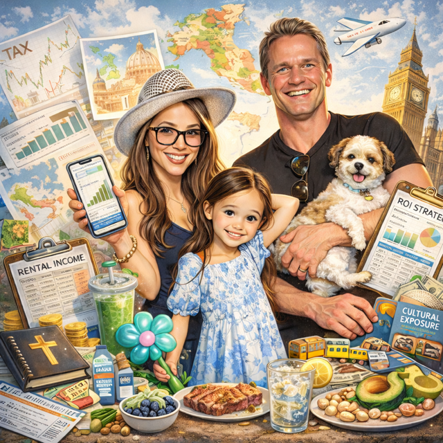

10+ years
Enterprise sales impact
About Me
Enterprise Account Executive | Strategic SaaS & Services Partnerships
I partner with enterprise leaders to unlock durable growth through strategic SaaS and services partnerships, balancing executive trust, commercial creativity, and operational excellence. My focus aligns with complex customers who need a partner who can translate vision into outcomes. More recently, I have led enterprise sales of AI-driven localization workflow solutions and have seen firsthand how AI transforms businesses, helping reduce average time-to-market by 50% and improve translation quality by 40%. OpenAI represents the forefront of AI transformation, and I am motivated by the opportunity to guide large enterprises through the shift to AI-enabled operations, helping them adopt AI in ways that drive safe, future-ready growth while unlocking new capabilities and protecting trust and long-term value.

10+ years
Enterprise sales impact
$30M+ TCV
Closed in seven- and eight-figure agreements
Enterprise renewals + expansion
Long-term strategic account growth
Non-standard deals
Consumption-based and hybrid SaaS + services structures
Steering complex global accounts through ambiguity, evolving products, and enterprise priorities.
Structuring prepaid consumption, AI-based offerings, and hybrid SaaS + services agreements.
Serving as a reliable strategic advisor across content, product, and AI-translation initiatives.
Coordinating sales, delivery, product, legal, and finance from contract through launch.
Partnering with delivery teams to scope, price, and execute large-scale global programs.
Leading enterprise RFPs and complex solution sales spanning platforms, APIs, and managed services.
Closed Smartling's first seven- and eight-figure agreements totaling $30M+ in TCV, while leading complex, non-standard enterprise deals from strategy through execution.
I met Lynn when she was hired as a new account executive at Lingotek. Lynn and I had the opportunity to work together on almost a daily basis to help companies find solutions to their translation requirements. Lynn is an amazing person and people love to work with her. The people she works with know that she listens and is concerned with the success of their projects. They never feel like they are being “sold” and I think this is why people and companies choose to do business with her. While working together, she consistently exceeded her sales goals and continued to do so after I left Lingotek. She matured quickly into a seasoned sales professional. She is disciplined and works hard. She is not shy in taking on challenges and then finding ways to push through the challenge to success. She has been successful in developing a sales pipeline. She then takes these opportunities and helps the prospects recognize the value of the solution and how it addresses their business requirements, which leads them to becoming a long-term customer. She works well with extended team members and has demonstrated good leadership skills. I would never hesitate to bring Lynn onto a sales team as she will be a very valuable asset. - Rod Parker, VP of Sales
Lynn is an incredible saleswoman and a phenomenal colleague. While I only had the opportunity to work with her for 10 months, Lynn ramped quickly and instantly added value - both through her industry knowledge and early deals. In her first year at Smartling, Lynn secured the largest Account Management deal of 2020. As her manager, it was so fun to work with someone who not only prioritized the support and outcomes she delivered for her customers, but who always came to the table with ideas. While these achievements and skills are fantastic, it was her camaraderie and indomitable enthusiasm and kindness that made her an invaluable part of the team. - Kate Fitzgerald, Enterprise Software Leader
Lynn is an amazing account rep. She helped manage the implementation of the translation management system for the global team at Renesas. She ensured that the right people were engaged at the right time, and made sure all the steps were clear. She was diligent and tireless, and followed up regularly. I’m still not entirely sure that she sleeps. She answered questions promptly, no matter what time zone I was in during the project. She is an asset to any team. - Susan Bednar Nayak, Website Design and Usability
I worked with Lynn for several years, as we partnered to transform the globalization function for marketing at IBM. Her can-do attitude meant that I never hesitated to reach out with questions or ideas -- and she was always quick to respond, even when she didn't know the answer to my question herself. I appreciated her skill at triage (knowing when we needed to bring in more help) and her proactive ownership when issues arose. She and her team worked as an integral extension of my team, which let us effect significant process change quickly and efficiently. Personally, Lynn is a delight: warm, funny, and very able to weave humanity into work. She builds strong relationships across teams and at all levels of the business, and maintains them over years. I would partner with her again in a heartbeat. - Sera Lewis, Human-centered Digital Leader

When I am not leading enterprise conversations, I am usually planning the next adventure with my family. I love traveling, exploring new cultures, and discovering international foods. Experiencing how people live and create around the world keeps me curious and grounded, and reinforces why global collaboration matters.
Fitness is another anchor for me. Whether it is strength training, an early workout before calls, or indoor climbing with my daughter and husband, I value activities that build resilience and consistency. Climbing in particular has become a favorite metaphor for growth. It requires focus, trust, and steady progress one hold at a time.
I am also passionate about investing and financial discipline. I enjoy studying markets, thinking long term, and applying strategic decision making to both business and personal life. The same principles that guide enterprise deals guide my investing approach: clarity, patience, thoughtful risk assessment, and disciplined execution.
Favorite off-the-clock themes